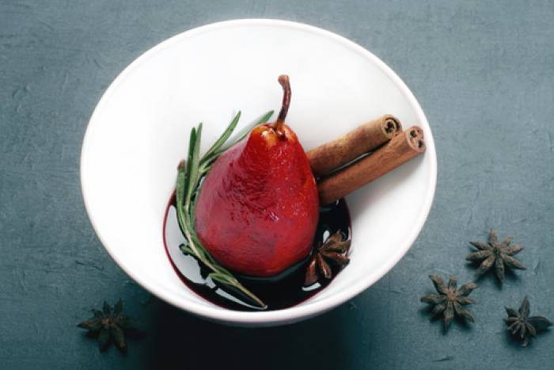

Poires Au Vin Rouge (Pears in Red Wine)

Description:
These red pears taste better than anything you've ever had before
Ingredients
- 3 cups red wine
- 1 cup sugar
- 2 cinnamon sticks
- 4 whole cloves
- 1 strip orange zest
- 1 teaspoon fennel seed (Optional)
- 3 whole black peppercorns (Optional)
- 2 bay leaves (Optional)
- 6 large firm pears
Steps
- Combine the red wine, sugar, cinnamon, cloves, orange zest, fennel seed, peppercorns, and bay leaves in a large saucepan. Peel the pears, and remove the cores from the bottom, leaving the stems intact; set aside. Bring the wine to a boil over high heat, stirring until the sugar has dissolved. Add the pears, return to a simmer, then reduce the heat to medium-low, and continue simmering until tender, about 25 minutes.
- Remove the pears from the wine syrup, cover, and refrigerate until cold. Strain the syrup through a mesh sieve, and discard the spices. Simmer the syrup over medium heat until thickened enough to coat the back of a spoon. Refrigerate the syrup until cold.
- Once the syrup is cold, pour over the pears, cover, and chill at least 2 hours before serving.
Still got a sweet tooth? Why not try making the following two super easy recipes as well
Vanilla Pudding
Lemon Meringue Pie